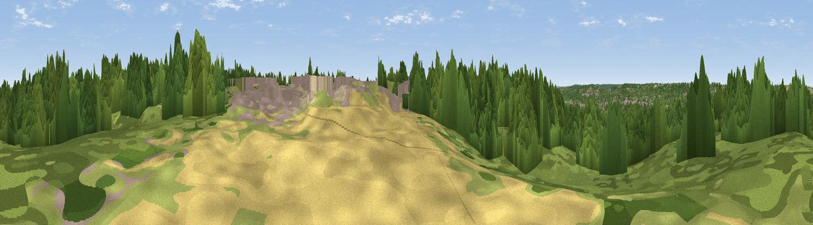

Legacy Park Viewpoint
#45404 in England · top 99% of its area beats it · near CanterburyWhere it is
The exact computed spot (TR 16215 58143). Click the marker for map links.
The view, rendered

A 360° render of this exact spot computed from the terrain model, tree cover and land cover — summer colours, afternoon light, calibrated against photographs of famous viewpoints. Real trees, hedges and buildings will differ in detail.
The panorama
Grey silhouette: terrain skyline in each direction (720 bearings, Earth curvature and refraction included). Dashed green: skyline with trees (+15 m) and buildings (+8 m) as obstacles. Blue strip: how far the ground is visible on each bearing.
Where the view opens
Wedge length = distance to the farthest visible ground on that bearing (vegetation-aware). Rings at 10, 25 and 50 km.
What fills the view
58% woodland · 24% built-up · 15% grassland · 3% cropland ·
Angular shares of the visible panorama (visual magnitude), not map area. Landscape diversity 0.46 (0–1 Shannon).
Key numbers
More beautiful places nearby
The staircase of upgrades: each row has a higher view potential than everything closer. Driving times are estimates from straight-line distance, calibrated against real road routing — check an actual route before setting out.
| Place | Direction | Drive | Score |
|---|---|---|---|
| Bab's Hill | S · 1 km | ~2 min | 15.2 |
| Viewpoint near Broad Oak | N · 2 km | ~6 min | 41.6 |
| Viewpoint near Chestfield | NNW · 7 km | ~15 min | 50.5 |
| Victory Woods Link Sculpture | WNW · 8 km | ~15 min | 50.7 |
| Viewpoint near Yorkletts | NW · 9 km | ~17 min | 60.9 |
| Viewpoint near Wye | SW · 15 km | ~26 min | 70.9 |
| Viewpoint near Brabourne | SSW · 17 km | ~29 min | 71.6 |
| Viewpoint near Brabourne | SSW · 17 km | ~29 min | 71.9 |
51.28138, 1.09895 · source: osm viewpoint · position refined by local search. Computed location — check access rights before visiting.